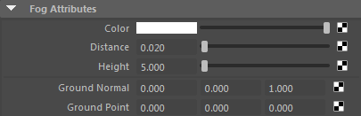
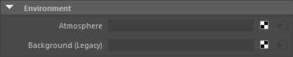
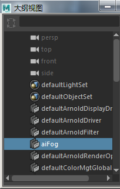
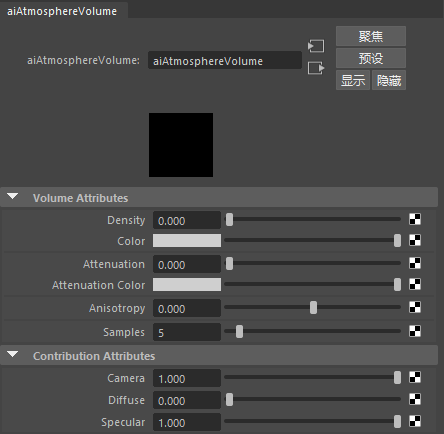
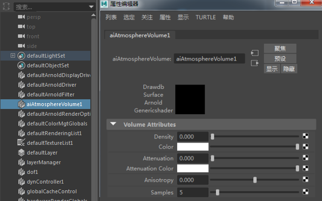

Atmosphere shaders are special volume shaders to simulate a light scattering effect in the scene, like fog. Atmosphere shaders have to be set in Arnold Render settings > Arnold Renderer > Environment > Atmosphere field.

This atmospheric shader node simulates the effect of light scattering, which causes more distant objects to appear lower in contrast, especially in outdoor environments.
The aiFog node can be found in the atmosphere menu under environment in the Render Settings window.

The aiFog node can also be selected from the outliner ( Show Dag Objects Only must be disabled).

AiFog accessible through the Outliner
This shader simulates light scattered by a thin, uniform atmosphere. It produces shafts of light and volumetric shadows cast from geometric objects.

Note: Videos that show how to use atmosphere_volume can be found here and here.
An example scene can be downloaded here.
An example scene can be downloaded here.
Atmosphere_volume can be found in the Atmosphere menu under Environment in the render settings window.
Atmosphere_volume can also be selected by showing Dag Objects Only in the Outliner window:
